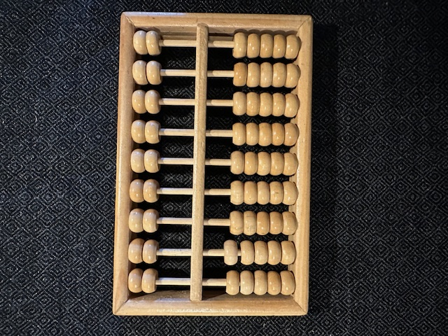
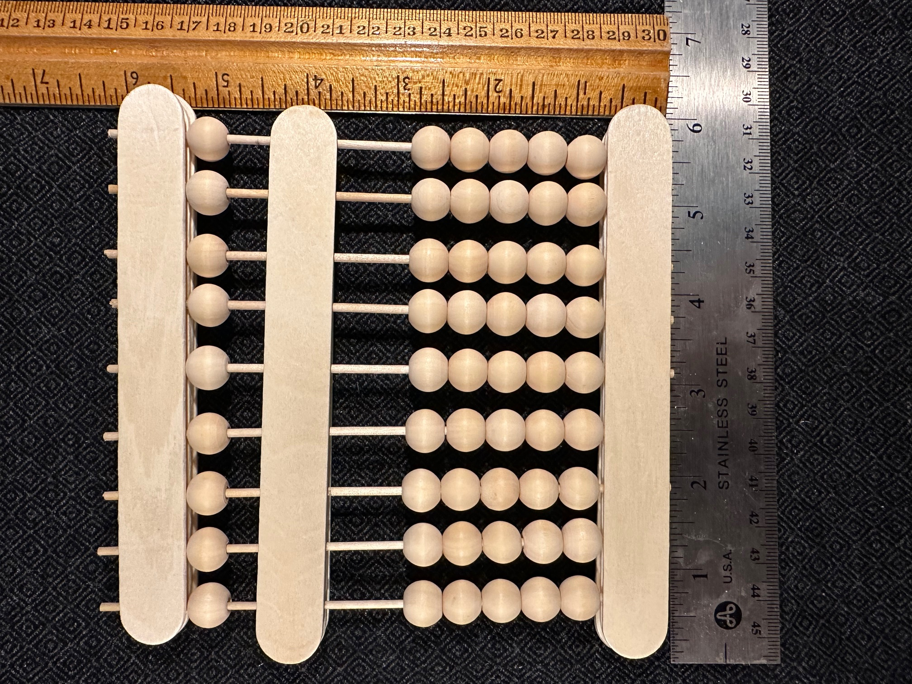
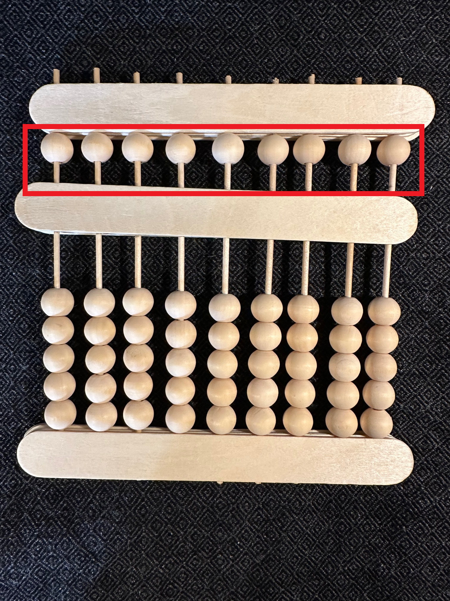
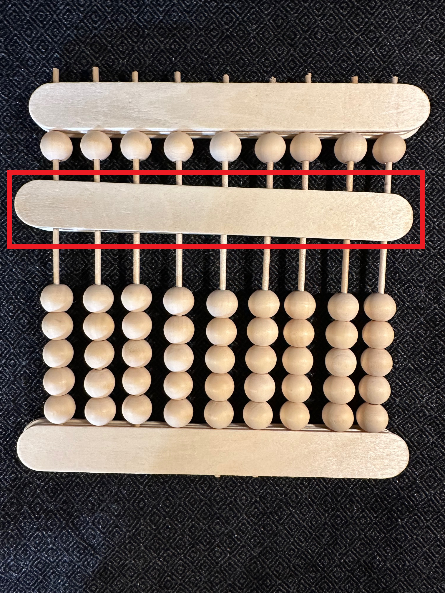
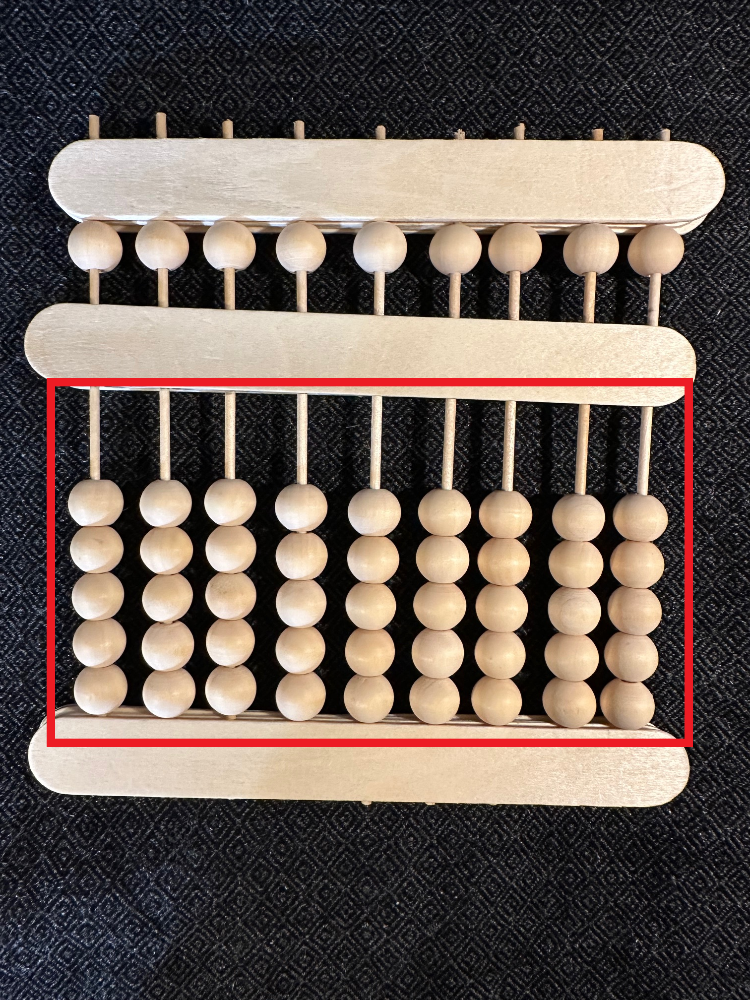
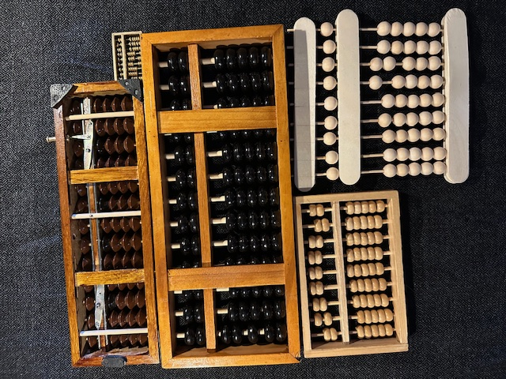

What is an abacus?
An abacus or counting frame is a device for performing bead arithmetic. For this project we are using an East Asian variant. The abacus is composed of moveable beads on fixed rods in a frame; you can represent numbers by the position of beads on the rods. Counting frames can have any number of rods.

The appearance and structure of the abacus. A recently handmade all-wood counting frame.

Our abacus with rulers for scale

Upper beads, also called the “upper deck” and sometimes “heaven beads”. “Upper bead(s)” is used both when talking about several rods’ upper beads and a single rod’s upper bead.

Middle bar

The bottom/lower beads, also known as the “lower deck” or “earth beads”. “Lower beads” is used interchangeably when talking about several rods’ lower beads or a single rod’s lower beads.

The abacus that we’re using throughout this project has the following structure: a middle bar, one upper bead and five lower beads. This one happens to have 9 rods, but we will work with arbitrarily many rods, students working with abacuses in a classroom setting can share abacuses if needs be.

Operating an abacus. The sort of Abacus we’re using is not double sided, it has a front (or face) and a back, the beads and rods are more recessed when viewed from the back, these kinds of counting frames are operated face up with the back laid flat against a level surface. Left: the backs of various abacuses.
